用于 3 天现场部署窗口，聚焦可执行动作、验收结果与责任边界

| 组件 | 运行方式 | 归属 |
|---|---|---|
| pacgate-api / deer-flow / Postgres / nginx | Docker Compose | 客户本地环境 |
| qm 协作空间 | qm up 独立容器 | 客户本地环境 |
| Ollama | Windows 本机运行 | 客户本地环境 |

| 验收项 | 通过标准 | 状态 |
|---|---|---|
| 基础服务健康 | docker compose ps 全部 healthy，/api/health 正常返回 | 必过 |
| 协作工作空间 | qm Web UI 可登录，workflow 调用成功 | 必过 |
| 研究工作空间 | /research/ 可用，模型调用与结果保存成功 | 必过 |
说明：本页面用于客户可读展示与安装过程复盘。工程执行仍以 deploy 目录下原始操作文档为主。